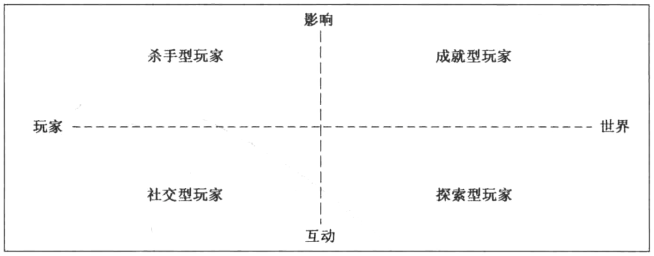

游戏为玩家而生
在很多时候，人们并不知道自己喜欢什么。他们可能觉得自己知道，但是他们认为想要的东西和他们真正想要的东西经常有很大的差异。
关键是倾听。你必须学会深入而彻底地倾听你的玩家。你必须熟悉他们的想法、情感、恐惧和欲望。
设身处地
最好的方法之一是使用移情，把你自己放在他们的位置上。
花时间与你的受众在一起，与他们交流，观察他们，想象成为他们会怎样。
人群特征
典型人群特征分析：
0~3岁 婴儿/幼童：对玩具很感兴趣，游戏的复杂度和其中包含的待解决问题通常对他们来说太难了。虚拟的界面超越他们的能力范围，会觉得直接的界面（例如触摸屏）很有趣。
4~6岁 学龄前儿童：第一次表现出对游戏的兴趣。更频繁地与父母而不是其他人一起玩简单的游戏。
7~9岁 儿童：“启蒙时期”，通常能阅读书本，能够想通问题并解决一些难题。自然而然对游戏玩法表现出兴趣。会自己决定他们喜欢的游戏和玩具，而不只是接受父母为他们做的选择。
10~13岁 青春期之前：经历一系列巨大的生理变化，开始对事物 有更为深入的思考。这个年龄有时候被称为“迷恋时期”，因为这个年龄段的孩子开始着迷于他们的兴趣爱好。
13~18岁 青少年：男性和女性的兴趣会出现重要的分化。男性继续对竞技与征服保持兴趣，女性更加留意现实世界的问题和互相交流。两种性别都喜欢尝试新的体验。
18~24岁 年轻的成人：年轻的成人通常有富余的时间和金钱，这让他们成为游戏的巨大消费群体。
25~35岁 二三十岁：时间变得更加宝贵。是个“构建家庭”的年龄。大多数成年人只玩一些休闲游戏，把玩游戏作为一种偶尔的娱乐活动，或者与他们的孩子一起玩游戏。这个年龄段的“核心玩家”————一些把游戏作为主要爱好的人————是重要的目标市场之一，因为他们会购买很多游戏，经常表达他们的喜好与厌恶，可能会潜在地影响社交网络中其他人的购买决策。
35~50岁 三四十岁：大多数这个年龄段的成年人都会陷入职业与家庭责任，他们会成为休闲玩家。由于孩子年龄的增长，这个年龄群体的人群会做出购买昂贵游戏的决定。如果有可能，他们会寻求整个家庭一起玩游戏的机会。
50+，五十岁以上：这个阶段的人群突然有了很多闲暇时间————一些人回归到他们年轻时喜爱的游戏中，其他人则寻求一种改变，转向新的游戏体验。这个年龄段的人群对重度社交的游戏体验尤其感兴趣。
由于儿童时期就是以玩游戏为中心，所以他们所有的游戏活动都与他们的儿童时期有关。为了给一些特定年龄的人群制作游戏，你必须让自己的游戏与他们儿童时期流行的游戏和主题保持协调。
媒介排斥女性吗
男性玩家喜欢在游戏中看到的5件事
- 掌握：男性很喜欢掌握一件事，这并不意味着这件事很重要或者很有用————它可能只是很有挑战性。
- 竞争：更在乎竞争的胜利带来的兴奋感
- 破坏：喜欢摧毁东西
- 空间谜题
- 试错：男性倾向于通过反复试错来学习
女性玩家喜欢在游戏中看到的五件事
- 情感：女性喜欢探索人类丰富情感的体验。
- 现实世界：女性玩家倾向于玩一些与现实世界有关联的娱乐活动。
- 照料
- 对话与字谜
- 通过例子学习
19号透镜：玩家
问你自己这几个关于你的目标玩家的问题：
- 他们通常喜欢什么？
- 他们不喜欢什么，为什么？
- 他们希望能在你的游戏中看到什么？
- 如果我处在他们的位置上，我想要在游戏中看到什么？
- 他们将会特别喜欢或者不喜欢游戏中的哪一部分？
你观察得越多，就越容易预测他们会喜欢什么。
通过密切关注不同人群特征目标的欲望和行为，我们能够平衡游戏来适应所有人。
心理特征
勒布朗的游戏乐趣分类：
感官：感官的乐趣包含使用你的感官。这种乐趣不能把糟糕的游戏变得优秀，但是它往往能把优秀的游戏变得更好。
幻想：一种想象世界我乐趣和想象你自己变为其他人的乐趣。
叙事：讲一个有一系列事件构成的戏剧化演变的故事。
挑战：在某种程度上，挑战可以被当作游戏玩法的核心乐趣之一，但是对于某些玩家来说，可能并不足够。
团队关系：指友情、合作和社区带来的乐趣。
探索：探索新事物是游戏乐趣的关键。
表达：表达自我的乐趣和创造事物的乐趣。比如允许玩家改变自己的角色，新的外观，捏脸等等
服从：服从游戏世界里的规则
巴特尔的玩家类型分类：
成功者：想要完成游戏目标。他们主要的乐趣源于挑战。
探索者：想要了解游戏的方方面面。主要的乐趣源于探索。
社交者：对与人们之间的关系更感兴趣。他们主要寻求团队合作的乐趣。
杀手：喜欢竞争并击败他人。主要兴趣在于“自己对其他人施加影响”。

更多的乐趣：更多
当用这种简单的分类描述复杂的人类欲望时，我们必须小心谨慎。
更多的乐趣类型：
预感：当你得知一个快乐就要来临时，等待它的到来就是一种快乐
完成：完成一件事是一种美好的感觉。
幸灾乐祸：当一些不公正的人突然遭到报应时，我们就会有这种感受。
赠与礼物：当你通过赠送惊喜的礼物让别人开心时，就会感受到这种独特的乐趣。这种乐趣并不是源于别人的快乐，而是源于你使他们变得快乐。
幽默感
可能性：这是一种有很多选择并且你能够任意挑选的乐趣。
成就的自豪感
惊喜
激动
战胜逆境
难以置信
用一个开放的心态接受那些不在列表上的乐趣，同时也要记住，乐趣对内容十分敏感，一个环境中很有趣的事，可能会在另一个环境中让人尴尬。
20号透镜：乐趣
- 你的游戏能给玩家带来哪些乐趣？这些乐趣能够继续改善吗？
- 你的体验缺少哪些乐趣，为什么？能够在游戏中增加这种乐趣吗？
要经常留意那些独特的、未分类的、在大多数游戏中都没有的乐趣。因为只要找到一个就能让你的游戏拥有独特的体验。
P186